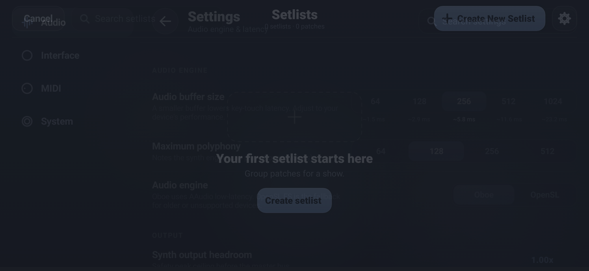
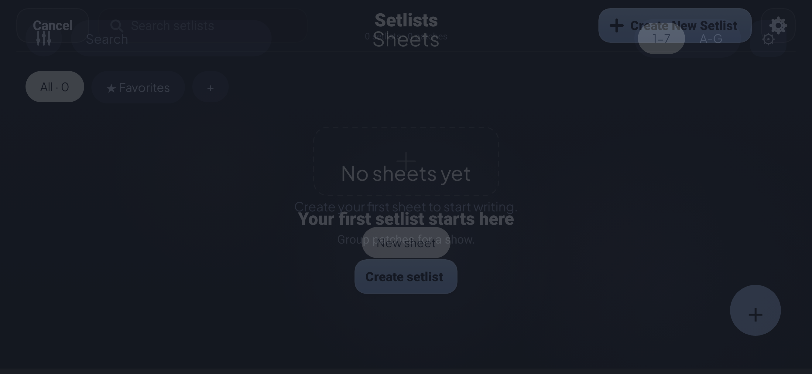
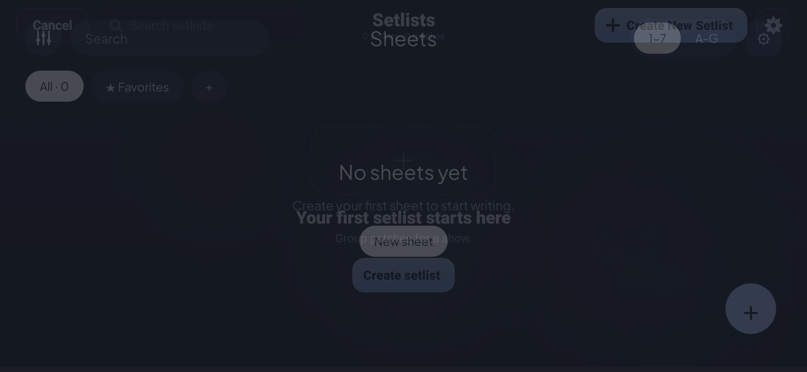
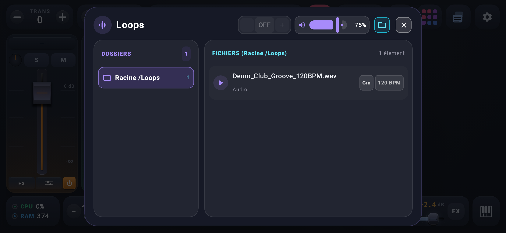

Mixer — reliefs/ombres 7dp, plaque de nom liseree, top bar

Mixer + accord C-E-G — pastilles de notes (lineHeight corrige)

Mixer + accord 4 notes — pastilles non tronquees
Mixer + Sustain — point + glow (dessin invente retire)

DrumPad — TonicPad bleu ciel fixe + glow anime, 16 pads

Settings — icone USB V2 (IconUsbV2)

Setlists

Sheets

Projects

Popup Soundfont

Popup Patches/Scenes — IconPatchesV2 (cartes empilees)

Popup Loops — source d'assignation DrumPad
Popup Track Settings
Popup Effects
Popup MIDI
Popup Velocity